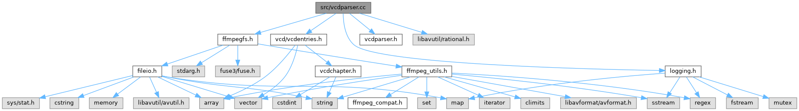

|
FFmpegfs Fuse Multi Media Filesystem 2.19
|
Video/Super Video CD parser implementation. More...
#include "ffmpegfs.h"#include "vcdparser.h"#include "logging.h"#include "vcd/vcdentries.h"#include <libavutil/rational.h>
Go to the source code of this file.
Functions | |
| static int | parse_vcd (const std::string &path, const struct stat *statbuf, void *buf, fuse_fill_dir_t filler) |
| Parse VCD directory and get all VCD chapters as virtual files. | |
| static bool | create_vcd_virtualfile (const VcdEntries &vcd, const struct stat *statbuf, void *buf, fuse_fill_dir_t filler, bool full_title, int chapter_no) |
| Create a virtual file for a video CD. | |
| int | check_vcd (const std::string &path, void *buf, fuse_fill_dir_t filler) |
| Get number of chapters on S/VCD. | |
Video/Super Video CD parser implementation.
Definition in file vcdparser.cc.
| int check_vcd | ( | const std::string & | path, |
| void * | buf = nullptr, |
||
| fuse_fill_dir_t | filler = nullptr |
||
| ) |
Get number of chapters on S/VCD.
| [in] | path | - Path to check |
| [in,out] | buf | - The buffer passed to the readdir() operation. |
| [in,out] | filler | - Function to add an entry in a readdir() operation (see https://libfuse.github.io/doxygen/fuse_8h.html#a7dd132de66a5cc2add2a4eff5d435660) |
Definition at line 159 of file vcdparser.cc.
References add_dotdot(), append_sep(), check_path(), load_path(), parse_vcd(), and Logging::trace().
Referenced by ffmpegfs_getattr(), and ffmpegfs_readdir().
|
static |
Create a virtual file for a video CD.
| [in] | vcd | - Video CD handle. |
| [in] | statbuf | - File status structure of original file. |
| [in,out] | buf | - The buffer passed to the readdir() operation. |
| [in,out] | filler | - Function to add an entry in a readdir() operation (see https://libfuse.github.io/doxygen/fuse_8h.html#a7dd132de66a5cc2add2a4eff5d435660) |
| [in] | full_title | - If true, create virtual file of all title. If false, include single chapter only. |
| [in] | chapter_no | - Chapter number of virtual file. |
Definition at line 57 of file vcdparser.cc.
References add_fuse_entry(), Logging::error(), ffmpeg_format, format_duration(), VcdEntries::get_chapter(), VcdEntries::get_disk_path(), VcdChapter::get_duration(), VcdEntries::get_duration(), VcdChapter::get_end_pos(), VcdChapter::get_size(), VcdEntries::get_size(), VcdChapter::get_start_pos(), VcdChapter::get_track_no(), insert_dir(), insert_file(), VIRTUALFILE::VCD_CHAPTER::m_chapter_no, VIRTUALFILE::m_duration, VIRTUALFILE::VCD_CHAPTER::m_end_pos, VIRTUALFILE::m_format_idx, VIRTUALFILE::m_full_title, VIRTUALFILE::m_predicted_size, VIRTUALFILE::m_st, VIRTUALFILE::VCD_CHAPTER::m_start_pos, VIRTUALFILE::VCD_CHAPTER::m_track_no, VIRTUALFILE::m_vcd, VIRTUALFILE::m_video_frame_count, replace_all(), strsprintf(), and VCD.
Referenced by parse_vcd().
|
static |
Parse VCD directory and get all VCD chapters as virtual files.
| [in] | path | - Path to check. |
| [in] | statbuf | - File status structure of original file. |
| [in,out] | buf | - The buffer passed to the readdir() operation. |
| [in,out] | filler | - Function to add an entry in a readdir() operation (see https://libfuse.github.io/doxygen/fuse_8h.html#a7dd132de66a5cc2add2a4eff5d435660) |
Definition at line 130 of file vcdparser.cc.
References create_vcd_virtualfile(), Logging::debug(), VcdEntries::get_number_of_chapters(), and VcdEntries::load_file().
Referenced by check_vcd().